-
Công tác chuẩn bị.
-
Dụng cụ: Bộ dụng cụ cầm tay, vam chuyên dùng, ê tô, chổi lông.
-
Thiết bị kiểm tra: Đồng hồ đo điện vạn năng, thiết bị kiểm tra roto, bàn map, đồng hồ so đế từ, khối V.
-
Các bước tháo. (sử dụng máy phát của Toyota làm minh hoạ)
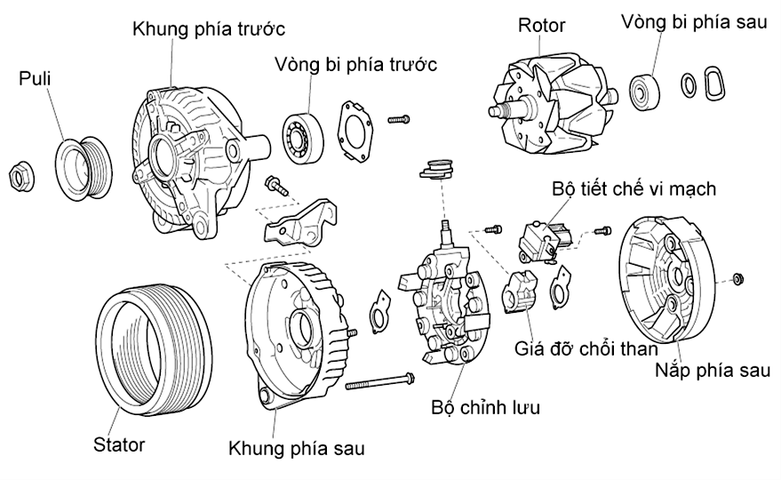
Hình 2.11: Cấu tạo máy phát điện xoay chiều của Toyota.
Tháo máy phát ra từ trên xe xuống.
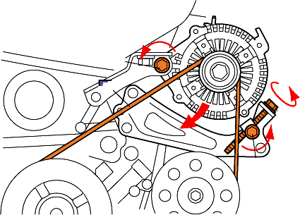
Tháo cáp âm ra khỏi ắc quy:
Trước khi tháo cáp âm ra khỏi ắc quy, tắt các phụ tải trên xe, tắt chìa khoá điện.
-
Nới lỏng bu lông lắp máy phát và tháo đai dẫn động.
-
Tháo các dây dẫn điện.
-
Tháo máy phát ra khỏi động cơ: Do phần lắp máy phát có bạc định vị, ăn khớp chặt lắc máy phát lên xuống một vài lần tháo máy phát ra ngoài.
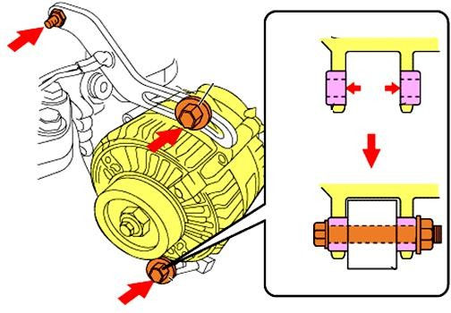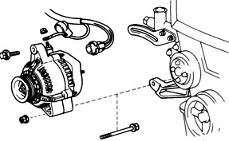
Hình 2.12: Tháo máy phát ra từ trên xe xuống.
Vệ sinh công nghiệp
Sử dụng chổi chuyên dùng, xăng, máy nén khí làm sạch bên ngoài máy phát
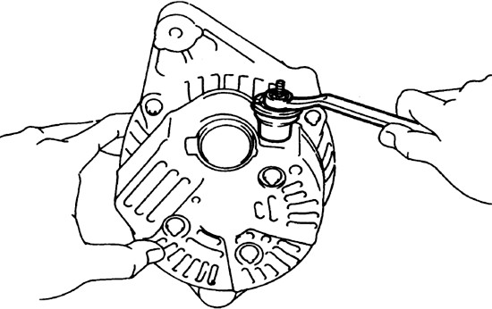
Tháo rã máy phát.
Dùng cle hay tròng 10 mm tháo đai ốc và phiến cách điện ra khỏi chân phát điện (B).
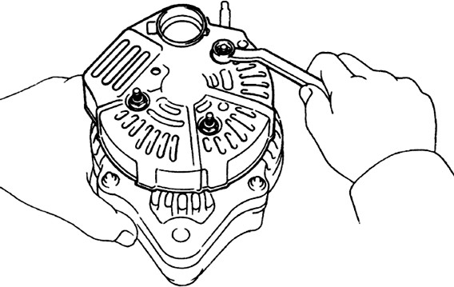
Tháo nắp sau.
Dùng cle hay tròng 8 mm tháo 3 đai ốc và chân mát, sau đó lấy nắp sau ra ngoài.
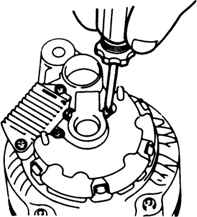
Tháo rã vòng kẹp chổi than
Dùng tô vít 4 cạnh tháo 2 vít cố định, lấy vòng kẹp chổi than ra ngoài.
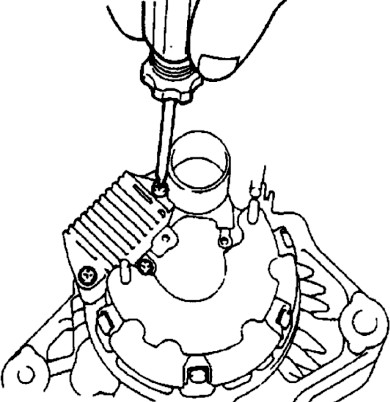
Tháo tiết chế vi mạch.
Dùng tô vít 4 cạnh tháo 3 vít bắt và lấy tiết chế vi mạch ra ngoài.
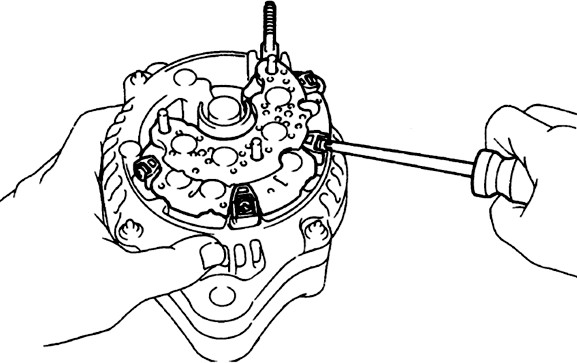
Tháo bộ chỉnh lưu
Dùng tô vít 4 cạnh tháo 4 vít bắt dây của stato và bộ chỉnh lưu, đưa bộ chỉnh lưu ra ngoài.
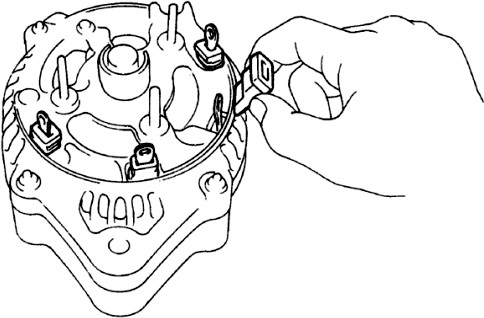
Tháo các chụp cao su cách điện.
Sử dụng tay tháo các chụp cao su cách điện giữa các đầu dây của stato và nắp sau.
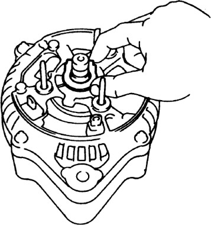
Tháo đệm.
Sử dụng tay tháo miếng đệm giữa bộ chỉnh lưu và nắp sau.
Tháo puly máy phát.
Có nhiều phương pháp tháo puly, dùng thiết bị tháo như hình dưới hay dùng thiết bị vặn ốc khí nén để tháo.

Tháo thân sau.
Thân sau ăn khớp với roto bằng vòng bi.
Dùng cle hay tròng 8 mm tháo 4 đai ốc liên kết nắp trước và sau.

Sử dụng vam chuyên dụng tháo nắp sau ra khỏi roto và nắp trước.

Tháo cụm roto máy phát.
Tháo roto ra khỏi thân stato máy phát
Vệ sinh công nghiệp.
Sử dụng chổi chuyên dùng, xăng, máy nén khí làm sạch các chi tiết vừa tháo của máy phát. Chú ý các chi tiết bằng cao su, nhựa như các vòng đệm chụp cách điện và tiết chế vi mạch, bộ chỉnh lưu không được vệ sinh bằng xăng dầu.
-
Các bước kiểm tra.
Kiểm tra sự nứt, vỡ, biến dạng, chờn các lỗ ren của nắp trước, sau. Đầu ren của trục.
Kiểm tra cụm roto máy phát
Kiểm tra vành tiếp điện xem có bị bẩn hay cháy không (vành tiếp điện tiếp xúc với chổi than, tia lửa điện gây ra bởi dòng điện sẽ làm bẩn và cháy vành tiếp điện).
Sử dụng giấy nhám 0-0 đánh lại vành tiếp điện. Chú ý: khi đánh lại uốn giấy nhám thành hình vòng cung tránh trường hợp đánh theo đường thẳng gây mòn không đều của vành tiếp điện.

Kiểm tra thông mạch giữa các vành tiếp điện.
Dùng đồng hồ đo điện đặt thang đo điện trở, kiểm tra thông mạch giữa các vành tiếp điện.
Kiểm tra thông mạch giữa cổ góp sử dụng để phát hiện mở mạch bên trong cuộn dây.
Nếu nhận thấy không thông mạch (có thể bị đứt) hay trị số không đúng tiêu chuẩn (chập mạch) thay roto.
Tiêu chuẩn: 2.8 - 3.0 Ω.

Kiểm tra cách điện giữa vành tiếp điện và trục roto.
Dùng đồng hồ đo điện, kiểm tra cách điện giữa vành tiếp điện và trục roto
Giữa vành tiếp điện và trục roto tồn tại một trạng thái ngăn cách.
Kiểm tra cách điện giữa vành tiếp điện và trục roto có thể phát hiện sự chạm chập, rò điện giữa cuộn dây và trục roto.

Đo vành tiếp điện.
Đường kính tối thiểu: 14,0 mm. Tiêu chuẩn đường kính: 14,4 mm Dùng thước kẹp, đo đường kính ngoài của cổ góp. Nếu kết quả đo vượt quá giới hạn mòn tiêu chuẩn, thay roto.
Vành tiếp điện tiếp xúc với chổi than trong khi quay và tạo ra dòng điện. Khi đường kính ngoài của cổ góp thấp hơn so với giá trị tiêu chuẩn, tiếp xúc giữa cổ góp và chổi than sẽ không đủ, nó có thể làm giảm khả năng phát điện của máy phát

Kiểm tra thông mạch cuộn dây stator.
Dùng đồng hồ đo điện vạn năng kiểm tra thông mạch giữa các đầu cuộn dây
Nếu không thông mạch các cuộn dây stator bị đứt, thay thế hoặc sửa chữa.

Kiểm tra cách điện cuộn stator.
Dùng đồng hồ đo điện vạn năng kiểm tra độ cách điện giữa cuộn dân và vỏ.
Nếu luôn thông mạch các cuộn dây stator bị chạm chập, thay thế hoặc sửa chữa.

Kiểm tra chổi than.
Dùng thước kẹp hay thước lá, đo chiều dài của chổi than nếu giá trị đo được thấp hơn tiêu chuẩn, thay thế chổi than (Đo chiều dài của chổi than ở phần giữa chổi).
Vành tiếp điện tiếp xúc với chổi than khi chiều dài của chổi than ngắn hơn so với giá trị tiêu chuẩn, trạng thái tiếp xúc sẽ kém đi, làm ảnh hướng đến dòng điện chạy qua.
Chiều dài tối thiểu 4.5 mm (0.177 in.)

Hình 2.14: Đo kiểm chổi than.
Thay chổi than.
Khi chiều dài tối thiểu không còn ta có thể tiến hành thay thế chổi than Chiều dài tối đa: 10.5 mm (0.413 in.)
Hình 2.15: Thay thế chổi than.


Kiểm tra tiết chế vi mạch.
Dùng đồng hồ đo điện vạn năng dạng kim đặt thang đo điện trở, kiểm tra tiết chế vi mạch.
Nếu đảo que đo giữa hai chân B&F mà một chiều lên một chiều không thì tiết chế tốt ngược lai tiết chế hỏng.
Nếu đảo que đo giữa hai chân E&F mà một chiều lên một chiều không thì tiết chế tốt ngược lai tiết chế hỏng.


Kiểm tra điốt trong bộ chỉnh lưu.
Dùng đồng hồ đo điện vạn năng dạng kim đặt thang đo điện trở.
Đo giữa cực B bộ chỉnh lưu và cực P1 đến P4, khi đảo ngược cực của dây đồng hồ, và kiểm tra chỉ có một chiều thông mạch.
Thay đổi đầu nối của cực B đến cực E. Thực hiện cùng quy trình như trên.

Kiểm tra ổ bi nắp trước
Sử dụng tay kiểm tra xem có bị rơ lỏng hay bị bó không.
Nếu vòng bi bị hư hỏng ta tiến hành thay thế.

Thay thế ổ bi nắp trước.
Dùng tô vít 4 cạnh tháo miếng chặn vòng bi.
Sử dụng đột ống chuyên dụng tháo vòng bi ra khỏi nắp máy phát.
Lắp vòng bi vào nắp máy phát


Kiểm tra ổ bi sau máy phát.
Sử dụng tay kiểm tra vòng bi có bị rơ lỏng hay bị bó không.
Nếu vòng bi bị hư hỏng ta tiến hành thay thế.

Thay thế ổ bi sau máy phát
Dùng cảo chuyên dụng tháo vòng bi ra khỏi roto, thay thế vòng bi mới.

Hình 2.16: Thay thế ổ bi sau.
-
Các bước lắp. (ngược với quy trình tháo). Lắp roto vào nắp trước máy phát.
Lắp nắp sau.
Siết ốc liên kết nắp trước và sau máy phát.
Lắp puly vào máy phát.


Hình 2.17: Lắp puly máy phát.
Lắp đệm cách điện cao su vào các đầu dây stato.
Lắp bộ chỉnh lưu vào máy phát.
Lắp bộ chổi than vào bộ tiết chế vi mạch.
Lắp bộ chổi than tiết chế vi mạch vào máy phát.
Lắp nắp bảo vệ sau vào máy phát.
Lắp đai ốc và phiến cách điện vào chân B.
Xoay puly máy phát bằng tay và cảm nhận có tiếng ồn và chặt khít hay không.


-
Kiểm thử.
Kiểm thử theo chế độ máy phát.
-
Gá máy phát (1) lên ê tô.
-
Cấp điện cho cuộn kích thông qua 1 điện trở (4) hay bóng đèn.
-
Mắc 1 bóng đèn thử (3) vào cực “+” máy phát.
-
Dùng ngoại lực quay máy phát.
-
Nếu đèn thử sáng, máy phát không kêu kẹt là tốt.

Hình 2.18: Sơ đồ kiểm thử máy phát.
Kiểm thử trên máy chuyên dùng.
Hình 2.19: Kiểm thử trên máy chuyên dùng.

-
Lắp máy phát vào động cơ.
Lắp dây dai vào puly máy phát và tiến hành căng dây đai đúng tiêu chuẩn.
-
Máy phát điện xoay chiều của Nissan.

Hình 2.20: Cấu tạo máy phát điện xoay chiều của Nissan.

Hình 2.21: Sơ đồ tháo máy phát điện xoay chiều của Nissan.
Khác với dạng máy phát của Toyota máy phát điện xoay chiều của Nissan có thể tháo rời stato ra khỏi nắp trước.
Liên kết giữa bộ chỉnh lưu và dây của stato bằng mối hàn.
Khi tháo stato ra khỏi nắp trước thì stato, bộ chỉnh lưu tạo thành một khối.
Trước khi đo kiểm stato và bộ chỉnh lưu ta cần loại bỏ liên kết giữa chúng.
Sử dụng mỏ hàn gia nhiệt các mối hàn giữa dây stato và bộ chỉnh lưu sau đó tháo rời stato, bộ chỉnh lưu.
Chổi than và giá đỡ chối than, bộ chỉnh lưu liên kết nắp sau bằng bu lông. Điều này gây khó khăn khi lắp roto vào vì vòng bi sau và cổ góp gây gẫy chổi than (chổi than dưới tác động của lò xo chổi than luôn đi xuống)
Trước khi lắp ta sử dụng que chêm chổi than (que sắt có đường kính từ 0,5
- 0,7 mm) đưa vào lỗ ở nắp sau máy phát nâng và giữ cho chổi than không đi xuống dưới. Đưa roto vào lắp nắp trước siết ốc cố định sau đó rút que chêm chổi than ra ngoài lúc này chổi than trở về vị trí ban đầu (luôn tỳ vào cổ góp).


Hình 2.22: Phương pháp lắp chổi than máy phát điện Nissan.
-
Nhận biết một số máy phát điện xoay chiều thông dụng.
Các máy phát điện xoay chiều của các hãng sản xuất, cơ bản có cấu tạo giống nhau chúng chỉ khác nhau vị trí cọc bắt dây.
Nhận diện các cọc bắt dây rất cần thiết cho công tác kiểm tra bảo dưỡng.

Hình 2.23: Máy phát điện xoay chiều hiệu Mitsubishi.
1. Đầu bắt dương ắc quy; 2. Lỗ giữ chổi than; 3. Cực L; 4. R cực kích từ;
-
Mát; 6. N đầu cuộn stato; 7. E mát; 8. F cực kích từ; 9. A cực ra chỉnh lưu.
Loại máy phát này thường được lắp trên xe Chrysler, Mazda, Mitsubishi.

Hình 2.24: Máy phát điện xoay chiều hiệu Bosch.
1. Đầu dây tụ lọc; 2. Cực kích từ; 3. Đầu bắt dương ắc quy; 4. Bộ điều chỉnh điện; 5. Mát; 6. Cực kích từ; 7. Cực tiếp mát.
Hình 2.25: Máy phát điện xoay chiều hiệu Nippondenso.
1. Đầu dây tụ lọc; 2. Cực S; 3. Cực L; 4. Cực kích từ; 5. Đầu bắt dương ắc quy; 6. N đầu cuộn stato; 7.E cực tiếp mát.


Hình 2.26: Máy phát điện xoay chiều hiệu Hitachi.
1. N đầu cuộn stato; 2. Lỗ giữ chổi than; 3. A cực dương ắc quy; 4. F cực kích từ; 5. Lỗ giữ chổi than; 6. E mát; 7. B đầu bắt dương ắc quy; 8. S đánh lửa;
9. L đèn báo nạp.

Hình 2.27: Máy phát điện xoay chiều hiệu Chrysles.
1. Cực dương ắc quy; 2. Mát; 3. Cực kích từ.

Hình 2.28: Máy phát điện xoay chiều hiệu Lucas
1. Đầu bắt dương ắc quy; 2. Khởi động; 3. Đánh lửa; 4. Đánh lửa; 5. Mát.
Bảng 2.a: Ký hiệu các đầu dây máy phát.
|
|
|
ĐỨC | RUMANI | MỸ | NHẬT |
|---|---|---|---|---|---|---|
|
FA | Я | D+ | A1 |
|
B |
|
KT | Щ | DF | B1 | F | F |
|
M | M- | D- | ┴ | GRD | N(E) |
|
A | Б | 30 | + | BAT | B |
-
Sửa chữa chi tiết máy phát điện một chiều.

Hình 2.29: Cấu tạo máy phát điện một chiều.
1. Puly; 2. Nắp trước; 3. Vòng bi; 4. Stato; 5. Trục roto; 6. Cuộn dây roto;
7;17. Cuộn dây stato; 8. Roto; 9,10. Cọc bắt dây; 11. Cổ góp; 12. Vành chắn bụi; 13. Ốc suốt; 14. Lò xo chổi than; 15. Nắp sau; 16. Giá đỡ chổi than dương;
18. Chổi than.
Quá trình sử dụng máy phát điện một chiều trên ô tô cần thường xuyên chú ý tới chế độ làm việc của nó, cụ thể là phải quan tâm tới những vấn đề sau.
-
Lượng điện năng phát ra: Trong điều kiện làm việc bình thường, điện năng của máy phát phát ra phải bảo đảm cho các thiết bị dùng điện trên Ô tô hoạt động bình thường (còi, đèn, gạt nước…) và các đồng hồ đo dòng điện, điện áp đều chỉ ở chỉ số định mức.
-
Hiện tượng bên ngoài: Không có tiếng va cơ khí, độ nóng trong phạm vi cho phép. Không có mùi cháy, không có khói và tia lửa phát ra.
-
Chế độ làm việc: Không để máy phát phải làm việc trong điều kiện nặng tải, bằng cách không sử dụng đồng thời nhiều thiết bị dùng điện trong cùng một thời điểm. Thời gian làm việc của máy phát điện không nên kéo dài liên tục quá lâu, nếu Ô tô phải hoạt động với cung độ quãng đường dài thì cứ trong khoảng 2-3 giờ nên cho máy nghỉ tối thiểu 20-30 phút. Thường xuyên kiểm tra độ căng của dây đai cánh quạt, bánh đai trên trục roto và dây đai nối với puli trên trục khuỷu (kiểm tra khi dừng máy).
-
Định kỳ bảo dưỡng: Muốn cho máy phát điện trên Ô tô hoạt động tốt, người sử dụng phải nắm được các yêu cầu kỹ thuật cơ bản đối với máy phát điện sau, để thường xuyên kiểm tra, bảo dưỡng.
+ Trục ô tô quay trơn, không bị rơ hoặc đảo. Độ đảo theo hướng kính cho phép lớn nhất là 0,1mm. Độ côn và độ ôvan của cổ trục không quá 0,05mm.
+ Các tấm mica cách điện trên cổ góp không được nhô lên khỏi các lá góp hoặc lệch so với cổ trục 0,05mm. Trường hợp cổ góp có độ mòn không đều, cần phải tiện láng lại, thì không được tiện quá 4-5mm so với đường kính ban đầu.
+ Chổi than không được mòn qua ½ chiều dài khi còn mới. Mặt tiếp xúc của chổi than với các phiến góp phải bảo đảm ≥75% diện tích cắt ngang. Dây điện nối ở chổi than ra ngoài phải hoàn toàn chắc chắn, tin cậy.
+ Toàn bề mặt cổ góp phải luôn sạch bóng, đều đặn, nếu có vết cháy hoặc lồi lõm thì dùng giấy ráp mịn để đánh bóng lại, sau đó dùng hơi xì sạch các bụi bẩn.
+ Ổ bị trên trục roto phải luôn đủ mỡ bôi trơn. Nếu ổ bi có lắp ống lót thì khi hở không được quá 0,07mm. Độ lỏng theo chiều dọc của bi chỉ được phép nằm trong phạm vi 0,1-0,3 mm.
+ Khe hở giữa nắp trước của máy phát điện tới lá thông gió không được hẹp hơn 0,5mm.
+ Nhiệt độ ở vỏ ngoài của máy phát điện khi làm việc với phụ tải lớn nhất cũng không được vượt qua 450C, nhiệt độ cổ góp không quá 600C.
+ Bánh đai trên trục roto lắp ghép không bị rơ, có mặt phẳng trùng với mặt phẳng bánh đai trên trục khuỷu. Độ căng của dây đai nối từ bánh đai trục khuỷu đến và dây đai nối từ quạt mát (nếu có) phải ở mức bình thường, không được dùng phương pháp tăng thêm miếng đệm để điều chỉnh.
+ Nếu ở giá máy phát có vòng cao su giảm xóc thì chúng phải có tính trạng đều nhau về độ dày và mức độ bền vững.
Sửa chữa các chi tiết.
-
Kiểm tra và sửa chữa cuộn dây phần ứng. Như trên đã trình bày, cuộn dây phần ứng có thể hư hỏng ở ba dạng: Ngắn mạch, chạm mát hoặc đứt mạch.
Muốn đi đến quyết định chọn phương pháp sửa chữa cụ thể, hợp lý thì phải kiểm tra để xác định tình trạng hư hỏng thật chính xác. Sau đây sẽ giới thiệu các biện pháp kiểm tra và sửa chữa.
+ Khi bị ngắn mạch: Để kiểm tra sự ngắn mạch của cuộn dây phần ứng, người ta sử dụng thiết bị chuyên dùng là gronha.

Hình 2.30: Kiểm tra ngắn mạch bằng gronha.
Đưa nguồn điện xoay chiều vào gronha, rồi dùng một lá thép mỏng hoặc lưỡi cưa gãy đặ lên trên rô to, nhưng lá thép vẫn giữ nguyên vị trí không quay theo. Nếu tới rãnh nào thấy lá thép bị rung lên, thì chứng tỏ cuộn dây trong rãnh đó bị ngắn mạch hoặc mica giữa 2 lá góp tương ứng bị cháy, tạo nên sự ngắn mạch của cuộn dây bên trong rãnh.
Sở dĩ lá thép rung, vì cuộn dây trong rãnh bị ngắn mạch sẽ tạo thành một mạch kín, mạch kín này nắm trong từ trường biến đổi của gronha nên cảm ứng ra dòng điện, dòng cảm ứng chạy trong mạch kín đáo, sẽ sinh ra từ trường xoay chiều riêng, từ trường này không ngừng hút và đẩy lá thép. Nếu rô to còn tốt thì đặt lên gronha S.đ.đ cảm ứng sinh ra sẽ triệt tiêu lẫn nhau, vì các cuộn dây của roto đặt đối xứng nhau, tức là trong cuộn dây của rô to không có dòng điện, lúc đó lá thép sẽ không bị rung.
Trường hợp không có gronha, có thể kiểm tra bằng cách dùng bóng đèn và nguồn điện một chiều để kiểm tra.
+ Khi bị chạm mát. Muốn xác định xem cuộn dây phần ứng có bị chạm mát hay không, ta dùng các phương pháp sau:
Bằng ôm kế: Đặt một que đo của ôm kế kế tiếp xúc với trục roto, que đo kia tiếp xúc với phiến góp theo vị trí nằm ngang. Nếu thông mạch kết luận cuộn dây nối với phiến góp bị chạm mát.

Hình 2.31: Kiểm tra chạm mát bằng ôm kế.
Bằng đèn chiếu sáng. Một đầu dây đèn nối với nguồn điện, đầu thứ 2 của dây đèn nối với cổ góp. Dây còn lại của nguồn nối với trục roto. Nếu đèn sáng chứng tỏ cuộn dây phần ứng bị chạm mát.

Hình 2.32: Kiểm tra chạm mát bằng ắc quy và bóng đèn.
+ Khi đứt mạch. Cuộn dây phần ứng bị đứt, phần lớn xẩy ra ngay tại đầu dây hàn vào phiến góp, do mối hàn bị bong ra. Đầu dây bị bong mối hàn thường nằm ở phiến góp bị cháy nghiêm trọng nhất.
Có thể dùng gronha hay ôm kế để kiểm tra.
Khi cuộn dây phần ứng có sự cố ngắn mạch, chạm mát hay đứt thì biện pháp sử lý hoàn toàn phụ thuộc vào đặc điểm đứt mạch hoặc tiếp xúc không tốt nằm ở phiến góp, các đoạn dây nối phần tử với phiến góp thì chỉ cần hàn lại. Nếu đứt mạch và tiếp xúc không tốt lại nằm ở trong phần tử dây cuốn thì phải thay bằng dây cuốn mới. Trường hợp không có điều kiện thay dây cuốn mới, thì có thể khắc phục tạm thời bằng cách:
-
Nối tắt. Cắt đứt hai đầu của cuộn dây bị hỏng ra, bọc mạch điện kỹ lại hai đầu dây đó, rồi nhét vào chỗ lõm chèn chặt lại. Dùng một dây đồng ngắn để nối tắt chỗ cuộn dây đã bị cắt ra.
-
Rút ngắn cuộn dây. Cắt từng vòng của bối dây có sự cố để rút ra, cho đến khi kiểm tra thấy đã trừ bỏ được điểm hư hỏng thì hàn đầu còn lại của cuộn dây vào lá góp tương ứng. Nếu số vòng dây bỏ đi quá nhiều thì tốt nhất là thay mới.
-
Kiểm tra và sửa chữa cuộn dây kích từ. Dây quấn kích từ thường hay hư hỏng ở những góc lượn, chỗ dẫn ra và nhất là tại nơi dây dẫn đi qua vỏ máy. Những hư hỏng thường gặp ở dây quấn kích từ là: chạm ra mát, đứt mạch hoặc tiếp xúc ở những mối nối không tốt, ngắn mạch giữa những vòng dây.
-
+ Khi bị ngắn mạch. Sự cố ngắn mạch giữa các vòng dây trong dây quấn kích từ của máy phát điện một chiều có thể phát hiện bằng các phương pháp:
-
Nối dây quấn kích từ với nguồn một chiều. Các bối dây sẽ phát nóng đều nhau. Nếu thấy, ở nối dây nào không nóng hoặc độ nóng kém, thì xác định bối dây ấy đã bị ngắn mạch, vì số vòng dây của bối dây đã bị ngắn mạch không có dòng điện đi qua.
-
Nối dây quấn kích từ với nguồn điện xoay chiều. Bối dây phát nóng mạnh nhất sẽ là bối dây có sự cố vì vòng dây ngắn mạch nằm trong từ trường biến thiên sẽ cảm ứng ra đòng điện chạy trong đó rất lớn.
-
Nối dây quấn kích từ với nguồn một chiều rồi dùng một lá thép thử trên đầu các cực từ, nếu cực từ nào có lực hút lá thép yếu hoặc không hút thì chứng tỏ cuộn dây đó có sự cố.
+ Khi bị chạm mát. Để tìm bối dây quấn kích từ chạm mát, ta ngắt toàn bộ nó ra khỏi phần ứng rồi đem nối với nguồn điện một chiều. Dùng vôn kế một chiều để đo như hình vẽ 2.31.
Một đầu của vôn kế nối với vỏ máy, đầu thứ 2 của vôn kế làn lượt cho tiếp xúc với cầu nối giữa các bối dây của từng cực từ. Bối dây bị chạm mát là bối dây chỉ có chỉ số điện áp ở 2 đầu nhỏ nhất.
Đơn giản hơn có thể tách rời bối dây của dây quấn kích từ ở từng cực từ, rồi sau đó dùng đèn kiểm tra hoặc dùng mêgôm mét để xác định bối dây chạm mát.

Hình 2.33: Sơ đồ tìm sự cố chạm mát của dây quấn kích từ
+ Khi bị đứt mạch. Sự cố dây quấn kích từ bị đứt mạch thường xảy ra ở cầu nối giữa các bối dây, ở các dây dẫn ra hoặc ở các mối nối giữa dây dẫn ra và đầu cốt của dây quấn kích từ.
Để phát hiện vị trí đứt mạch, ta đặt điện áp định mức vào dây quấn kích từ. Dùng vôn kế đấu một đầu vào nguồn, đầu thứ 2 lần lượt đo trên các cầu nối giữa các cực từ. Tới bối dây có sự cố đứt mạch vôn kế sẽ có số đo đúng bằng toàn bộ điện áp nguồn.
Tùy theo tình trạng hư hỏng của cuộn dây kích từ mà chọn cách xử lý, sửa chữa, khắc phục. Trường hợp bắt buộc phải thay thế bằng cuộn dây mới thì dùng mỏ hàn nhả riêng bối dây có sự xố ra. Ghi nhớ chiều quấn dây, cách đấu dây, sau đó đếm gõ bỏ số vòng dây đã hỏng. Dùng dây đồng có đường kính như dây cũ quấn lại bối dây trên cực từ với số vòng quấn như đã đém khi gỡ bỏ.
-
Kiểm tra và sửa chữa cổ góp, chổi than.

Hình 2.34: Kiểm tra độ cong trục rô to máy phát.
1. Đồng hồ so; 2. Rô to máy phát; 3. Mũi chống tâm.
Trong qua trình máy phát điện làm việc, cổ góp và chổi than phải được bảo dưỡng cẩn thận. Các chi tiết này phải luôn được sạch sẽ. Bụi kim loại và bụi than dính dầu bám lên các chi tiết sẽ làm ảnh hưởng rất nhiều đến chế độ làm việc của máy phát, đó cũng là một trong những nguyên nhân sinh ra tia lửa trên cổ góp. Tia lửa sinh ra trên cổ góp càng lớn và thời gian càng dài sẽ làm cho cổ
góp bị cháy mòn càng nghiêm trọng. Sự cháy mòn cổ góp càng nghiêm trọng, lại làm cho tia lửa lớn hơn. Do đó nếu ở cổ góp thấy xuất hiện tia lửa không bình thường, phải kịp thời sửa chữa ngay để tránh cháy cổ góp.
Bề mắt làm việc của cổ góp phải là hình trụ và phẳng, không được mấp mô, không có vết cháy xém. Mica cách điện giữa các phiến góp không được nhô lên khỏi bề mặt làm việc của cổ góp. Độ lệch tâm cho phép của cổ góp không được vượt qua 0.02 - 0.03mm. Khi cổ góp lệch tâm quá lớn, mài hoặc tiện láng lại.
Cổ góp dù không được láng lại cũng phải làm sạch rãnh giữa các phiến đồng với độ sâu 0,6 ÷ 0,8mm. Rô to của máy phát sau khi quấn lại được tẩm sấy kỹ, kiểm tra và mang ra sử dụng.

Hình 2.35: Làm sạch cổ góp bằng dao chuyên dùng.
1. Rôto; 2. Dao chuyên dùng; 3. Lá góp (phiếu đồng); 4. Rãnh cách điện.
Chổi than phải yêu cầu có bề mặt làm việc láng bóng. Lực ép của lò xo vừa phải, để bề mặt chổi than ôm khít lấy bề mặt cổ góp. Khi chổi than bị hỏng, cần thay thế chổi than mới phải cùng kích thước, mã hiệu.
Để đạt được bề mặt làm việc của chổi than như ban đầu, ta cắt giấy ráp thành một băng dài rồi đem ốp lên mặt cổ góp sao cho mặt ráp quay về phía chổi than, lực nén chổi than giữ bằng khi máy làm việc bình thường. Kéo giấy ráp qua lại theo chiều xuống dưới ốp vào cổ góp, nếu kéo vênh lên phía trên sẽ làm cho cạnh của chổi than bị mòn, bề mặt làm việc của chổi than sẽ bị thu nhỏ và chổi than cũng không ôm khít cổ góp.

Hình 2.36: Rà chổi than máy phát một chiều
1. Băng giấy; 2. Cổ góp; 3. Chổi than và giá.
Với chổi than cứng, cần bắt đầu bằng giấy ráp cỡ hạt lớn và kết thúc bằng giấy ráp cỡ hạt mịn. Chổi than mềm, có thể tiến hành ngay bằng giấy ráp hạt mịn.
Hình 2.37: Sơ đồ nguyên lý kiểm tra lực ép lò xo chổi than máy phát điện.
1. Cổ góp; 2.Chổi than; 3. Lực kế kiểm tra; 4. Băng giấy.
Tạo xong bề mặt làm việc cho chổi than phải làm sạch bụi than và bụi thủy tinh bằng khí nén. Lưu ý không thổi bụi than và bụi thủy tinh vào các chi tiết khác của máy.

-
Thay thế các pu ly bị sứt vỡ đến ngang đáy rãnh lắp dây đai hoặc mòn hỏng lỗ lắp cùng rãnh then, pu ly bị sứt mẻ nhỏ có thể hàn đắp sau đó sửa lại lãnh lắp dây đai. Tán lại các đinh tán trên giá chổi than. Thay các chổi than có chiều cao nhỏ hơn 6mm.
-
Lắp ghép:

Hình 2.38: Sơ đồ lắp ghép máy phát.
Lắp máy phát theo trình tự ngược lại với quá trình tháo. Các vòng bi được tra đủ mỡ, khe hở lắp ghép giữa vòng bi và bạc lót không quá 0,07mm đồng thời phải có tấm dạ chắn mỡ mới. Các ca bi ngoài và trong, nếu thấy hơi mòn, trước khi lắp ghép có thể sử dụng phương pháp gại điện trên cổ trục hoặc trên ca bi.
Trong quá trình lắp cần thường xuyên kiểm tra sự quay trơn của rô to trên hai vòng bi nhất là khi đã kết thúc việc siết hai ốc suốt.
Khi lắp pu ly cần kiểm tra khe hở giữa mặt đầu các cách quạt với nắp trước máy phát không được nhỏ hơn 0,5mm.
-
Kiểm tra thử máy phát điện một chiều.
Máy phát một chiều sau khi sửa chữa được kiểm thử trên thiết bị chuyên dùng cũng có thể bằng các phương pháp đơn giản như sau.

Hình 2.39: Nguyên lý kiểm thử máy phát một chiều theo chế độ động cơ
1. ắc quy; 2. Ampe kế; 3. Máy phát; 4. Tốc kế.
-
Tiêu chuẩn kỹ thuật
+ Để máy phát làm việc ở chế độ động cơ trong 1 ÷ 2 phút, đồng hồ ampe báo 3,5 ÷ 5A với tốc độ tối thiểu phải đạt 550 vòng/phút.
+ Máy phát quay đúng chiều, không ồn, trong khi thử nhiệt độ làm việc của máy không vượt quá 400C.

Hình 2.40: Nguyên lý đấu thử máy phát một chiều ở chế độ không tải.
1. Tốc kê; 2. Máy phát; 3. Ampe kế; 4. Khóa điện; 5. Vôn kế; 6. ắc quy.
+ Khi thử ở chế độ không tải, rô ro máy phát quay với tốc độ 800 ÷1000 vòng/phút, điện áp máy phát phải đạt trên 12,5V.
+ Khi thử ở chế độ có tải, rô to máy phát quay với tốc độ 2500 ÷ 3000 vòng/phút, điện áp máy phát phải lớn hơn 12,5V.

Hình 2.41: Sơ đồ nguyên lý đấu thử có tải máy phát một chiều.
1. Máy phát; 2. Ampe kế; 3. Khóa điện; 4. Vôn kế; 5. Biến trở; 6. ắc quy.
Bảng 2.b: Các hư hỏng của máy phát điện.
|
|
|
|---|---|---|
|
|
|
|
|
|
|
|
|
|
|
|
|
|
|